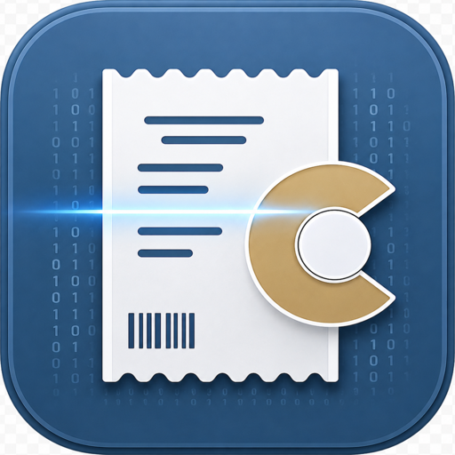
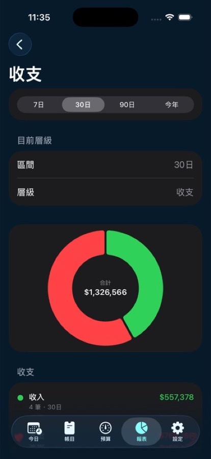

AI 照片草稿
拍攝或匯入收據、商品與帳單圖片後，Cofec 可協助辨識商家、日期、金額、品項、折扣、費用與幣別，再交由你確認。

Cofec產品定位
Cofec 適合需要留下可對帳、可查詢、可匯出的個人財務紀錄的人。它不連接銀行帳戶、不替你做投資或稅務建議，也不會讓 AI 靜默建立交易。
核心功能
拍攝或匯入收據、商品與帳單圖片後，Cofec 可協助辨識商家、日期、金額、品項、折扣、費用與幣別，再交由你確認。
支援收入、支出、轉帳、投資、資產、負債與調整紀錄，並保留品項明細、歸屬對象、商家、備註與幣別。
用收支、帳戶、類目與交易明細檢查資料可信度，讓日常記帳不只是輸入，也能回頭確認。
支援匯入、匯出、JSON 備份與 SQLite 備份恢復，目標是避免把你的歷史資料困在單一 App 裡。
報表
Cofec 的報表設計重點是可追溯。你可以從收支總覽進入類目、商家與交易明細，確認每一筆資料為何被計入。

信任原則